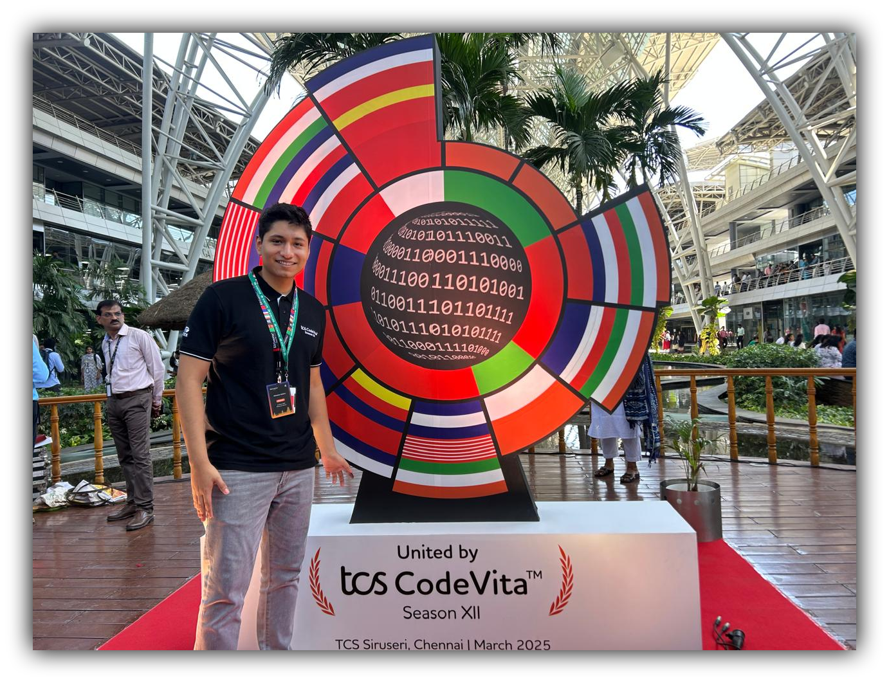

Es la más grande, antigua y prestigiosa competencia mundial de programación. Se participa en equipos de 3 estudiantes de la misma universidad y consta de varias fases de clasificación hasta llegar a la final mundial.
IEEEXtremeConcurso mundial de programación en equipos de 3 estudiantes de la misma universidad. Es organizado por el IEEE y consta de una sola fase que dura 24 horas.
 TCS Codevita
TCS Codevita
Concurso mundial de programación dirigido a estudiantes universitarios, organizado por Tata Consultancy Services (TCS). Consta de 2 fases virtuales de clasificación para llegar a la final que se realiza en la India.
 Maratón Femenina de Programación (MFP)Concurso femenino de programación dirigido a estudiantes universitarias de latinoamérica, organizado por la Sociedad Brasileña de Computación (SBC). Consta de una fase virtual de clasificación para llegar a la final que se realiza en Brasil.
Coder BloomConcurso Femenino de programación con ediciones mensuales, dirigido a todas las mujeres de latinoamérica.